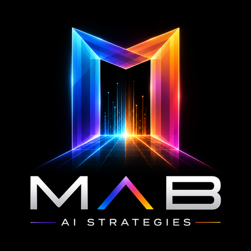

Converting chaos into consistency.
Consistency into currency.
Igniting the journey…
Scroll to travel
A crewed probe may cross your path — intercept for a real client result.
PROBE INTERCEPT
A pilot on a drift craft just handed you something useful.
Plain language. No telemetry dump.